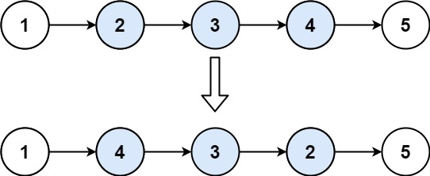
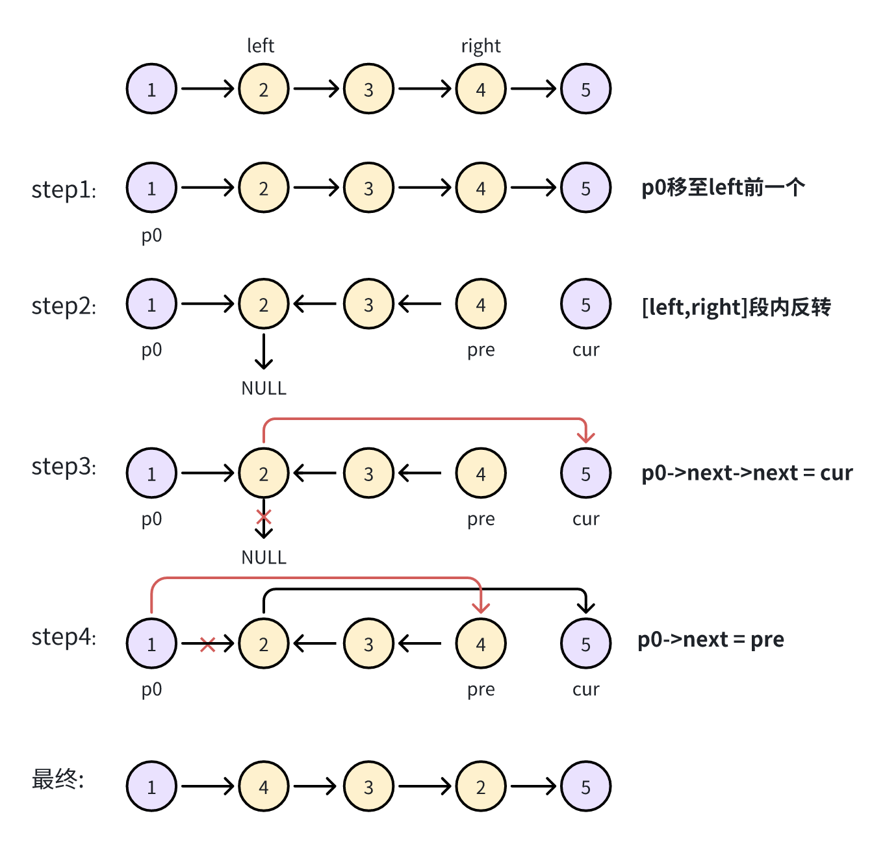

题面
给你单链表的头指针 head 和两个整数 left 和 right ，其中 left <= right 。请你反转从位置 left 到位置 right 的链表节点，返回 反转后的链表 。
示例 1：

输入：head = [1,2,3,4,5], left = 2, right = 4
输出：[1,4,3,2,5]示例 2：
输入：head = [5], left = 1, right = 1
输出：[5]提示：
- 链表中节点数目为
n 1 <= n <= 500-500 <= Node.val <= 5001 <= left <= right <= n
进阶： 你可以使用一趟扫描完成反转吗？
思路
- 这道题的关键是理解
[left, right]段内反转的过程，必须画图辅助理解：

图 反转链表 II 步骤图解
- 四步走：
- step1：p0 移至 left 前一个节点。从哨兵节点出发，走
left - 1步 - step2：[left, right] 段内反转。和反转整个链表一样的操作（pre/cur/tmp 三指针），循环
right - left + 1次。反转结束后pre指向反转段的新头（原来的 right 节点），cur指向 right 后面的第一个节点 - step3：`p0.next.next = cur`。反转后
p0.next仍指向原来的 left 节点（现在变成了反转段的尾），让它的 next 接上 right 后面的节点 - step4：`p0.next = pre`。让 p0 指向反转段的新头
- 易错点：step3 和 step4 的顺序不能反！如果先执行
p0.next = pre，那p0.next就不再是原来的 left 节点了，再执行p0.next.next = cur就改错节点了
代码实现
struct ListNode {
int val;
ListNode *next;
ListNode() : val(0), next(nullptr) {}
ListNode(int x) : val(x), next(nullptr) {}
ListNode(int x, ListNode *next) : val(x), next(next) {}
};
class Solution:
def reverseBetween(self, head: Optional[ListNode], left: int, right: int) -> Optional[ListNode]:
p0 = dum = ListNode(0, head)
for _ in range(left - 1):
p0 = p0.next
cur = p0.next
pre = None
for _ in range(right - left + 1):
tmp = cur.next
cur.next = pre
pre = cur
cur = tmp
p0.next.next = cur # 原 left 节点（现尾）接上 right 后面的节点
p0.next = pre # p0 指向反转段的新头
return dum.next- 复杂度：时间 O(n)，空间 O(1)